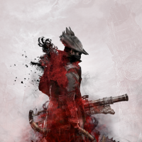
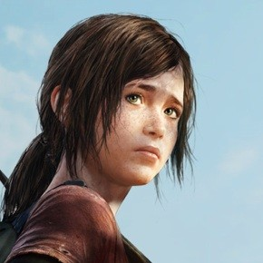

Game's Horizon was founded by 3 young gaming enthusiasts who wanted to bring the best contents about gaming
and everything related to this topic. We as a team felt like something was missing when we were just readers
and consumers, something that other gaming newsletters couldn't fill. So we started our own which covers
E-sports, platform games, mobile games and also news about Mainstream game developers as well as Indie developers
and their games. We love all games from Ego-Shooters to MMORPGs and Mobile Games, that is why we started this company
in the first place so that gamers can enjoy not only mainstream but also games which deserves more attention
even with a low budget. We are gamers at heart and we hope that you are too.

Nguyen Hai, Tuan Son (Co-Founder & E-sports correspondent)
A new Sport is on the rise and it will take the world by storm.
Hi call me by my gamer tag TuzÒ. I am not oly an E-sports enthusiast but also an active gamer myself.
I play actively League of Legends that is why my content are often about LoL news, pros etc.
But do not worry we also cover contents from other important E-sports titles as our staff expands!
My task here at Game's Horizon is to bring the latest news about professional gaming, whether it is about
pro-gamers who had been bought by another team or an E-sports team losing sponsorship. I will ensure 100%
true facts and will not listen to every rumour which makes the round. Also game analyzing will be done by my
team to bring you insights about team strategies and more. I hope you will like what I am doing
Mai, Truc Linh (Co-Founder, Mobile Game Reviews)
Every game deserves attention, even the small underfunded ones.
Hello everyone I am Linh and I played games since I was very young, my first experience was Kingdom Harts on
the Playstation 2. That is when I knew I want to do something with games when I grow up. And here I am
writing reviews and keep playing games. I personally believe that there are such underappreciated games away
from the big funded mainstream games. Those big names in the gaming industry lack heart and creativity which
I strongly find disturbing how many people keep playing. That is why I love Indie games which is made by
individuals who live for the game. Also mobile games are awesome since they are easy to get into and
playable everywhere. I will focus on mobile games in my articles but also cover some manstream games which deserves my attention.

Kukic, Tatjana (Co-Founder, correspondent)
I am a gamer not because I have don't have a life, but I have many to choose from.
Hey Everybody my name is Tatjana and I am your correspondent and main writer. I like to travel a lot which
is why the most content about international Games Expo like E3, Gamescom, PGW and so on are written by me!
Also I cover press conferences about games internationally no matter where it is. Also my gaming is a huge part
of my life which is why I play every time I have the time to do so. Also I like to going out to eat, try out
different foods, experience different culture and of course different style of games.